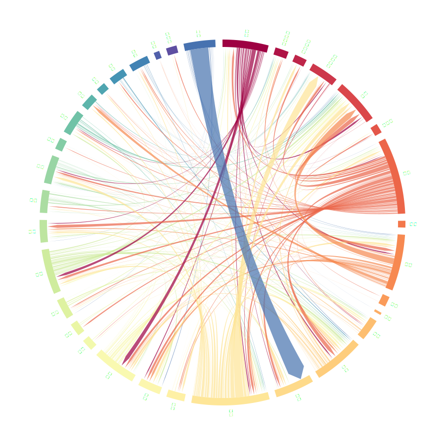

无假期，不旅游
下图展示了2023年至2024年第一季度“旅游”话题下每日热门微博条数。
不难看出该话题在法定节假日相对火热，而在工作日期间讨论低迷。
2024年春节假期期间，话题热度达到峰值。
由于大多数人只能在假期出门旅游，文旅热搜的存在并不能改变人们关注旅游话题的规律。
流量“黑马”频出的一年
下图展示了2023年至2024年第一季度“旅游”话题下每日提到各省的热门微博条数。
使用鼠标在左图中选择日期，以激活右图显示；
鼠标划过图例以查看相应省区曲线。
2023年4月，“淄博烧烤”带火山东；
2024年1月，“尔滨”带火黑龙江。
“冰与火之歌”：淄博与尔滨的“泼天富贵”
下图展示了2023年至2024年第一季度在“旅游”话题下提到“淄博”和“尔滨”的微博条数
两座城市分别在不同时间爆红，其中有互联网时代流量机制的偶然，亦有地方旅游建设加紧发力的必然。
然而，我们也必须看到，尽管淄博和尔滨努力维持热度，网民的关注度依然会很快转向其他热搜，一切重新归于平静。
这种“流量红利”很难带来长期稳定的收益，各地更需久久为功提升旅游体验。
文旅抖音，各显其能
文旅抖音账号是2023年中国文旅领域最最出圈的平台之一。
下图展示了截至2024年1月，各省抖音账号作品及粉丝数据。
然而，抖音的爆火出圈一定能为地区旅游业带来真实收益吗？
文旅抖音的“数量”和“质量”
数量并非评估文旅抖音账号运营水平的唯一KPI，每条短视频的平均获赞数更能反映网民对账号内容的反响。
当然，互联网时代，算法和流量机制不可捉摸，提升数量或许确实也是一种可行的运营策略。
但如果片面追求数量，丢掉质量，则得不偿失。
文旅短视频的“数量”和“质量”是各地需要发挥智慧思考的大问题。
流量之下，其实难副
在各省文旅抖音“整活”爆火出圈的同时，我们也应当看到，
在现实旅游收入表现看来，叫号未必叫座。
许多省区虽然抖音账号爆红，然而旅游资源服务能力有限，游客人均消费颇低。
大多数接待人次高、人均收入多的地区，依然是传统旅游强省，而不是通过抖音爆红的“热门目的地”。
流量之下，其实难副。
各省的人最喜欢去哪里？
基于“旅游”话题下发布IP位于各省、提到其他省份旅游目的地的微博统计。

谁是谁的平替？
"不是XX去不起，而是XX更有性价比"这一句式在2023年下半年引发了模因传播，许多人用这一句式和大家分享自己的穷游心得。
基于2023年至2024年第一季度类似“不是XX去不起，而是XX更有性价比”的句式进行正则匹配。
节点可自由拖拽。
哈尔滨成为最大“平替中转站”，最长的“平替链”连接了六个旅游目的地，例如：
瑞士 → 哈尔滨 → 威海 → 泉州 → 河南 → 浙江